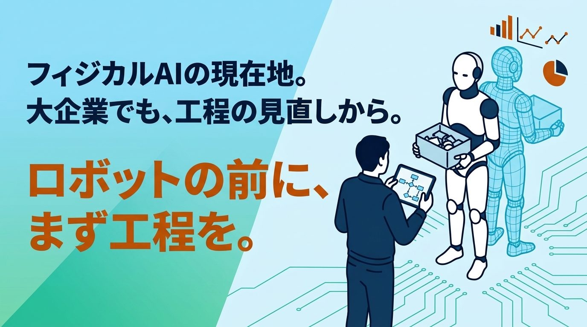

2026年9月、トヨタが2028年以降、毎年1兆円を投じて世界60工場を刷新し、グループとサプライヤーで40万台のロボットをフィジカルAI搭載のものに更新していくと発表しました。あのトヨタがついに、という気持ちと同時に、話の規模が大きすぎて正直ピンときませんでした。そこで、いま何がどこまで進んでいるのかを調べてみました。
自動運転でいえば、レベル2から3あたり
フィジカルAIやヒューマノイドという言葉はよく耳にしますが、実際にどこまでできるのかは分かりにくいものです。そこで、自動運転のレベル分けに当てはめて整理してみました。なお、自動運転のレベル分けには公式の定義がありますが、ヒューマノイド側は公式の基準ではありません。調べた内容をもとにした、あくまで個人的な整理です。
海外メディアの分析によると、フィジカルAIは2026年に工場で実際に作業をするようになるものの、ごく少数の試験運用サイトに限られ、作業内容も限定的です。サイクルタイムや信頼性は、従来の産業用ロボットが10年前に達成した水準にとどまるとされています。Figure AI、Agility Robotics、Tesla Optimus、Unitreeといったメーカーは、自律的な搬送やビンピッキングを実証しています。ですが、自動車生産ライン並みの速度で稼働しているものは、まだありません。
決められた作業は自律的にこなせる。ただし環境は限定的で、想定外には対応できず、人の監視が前提。自動運転でいえばレベル2から3のあたり。これが現在地だと考えています。
トヨタは「ロボットを置けば解決」とは考えていない
今回調べていて、一番印象に残った点です。トヨタの中嶋副社長は、フィジカルAIロボットについて、トヨタ生産方式を適用した上で工場に導入していくと述べています。単なる人の置き換えではなく、まず生産工程を見直し、生産の整流化を行った上で、必要な箇所に導入していくという方針です。
工程が整理されていない現場にロボットを入れても、うまくいかない。これは以前、省力化のコラムで書いたことと同じ構造でした。1兆円を投じる企業でさえ、この順番は変えていないのです。
ロボットメーカー4社が、同じ仮想空間を選んだ
もう一つ、大きな動きがありました。2026年3月のNVIDIA GTCで、ファナック、ABB Robotics、安川電機、KUKAの4社が、そろってNVIDIAのシミュレーション基盤の採用を発表しました。4社の導入実績は、合わせて世界で200万台を超えます。
用途は、設備の仮想立ち上げです。物理的に正確なデジタルツイン上で、生産ライン全体の開発と検証を行うとされています。海外の技術メディアは、世界の大手4社が同じシミュレーション環境を採用すれば事実上の標準が生まれ、仮想空間での検証が自動化ライン設計の共通言語になる、と表現していました。
なぜ、仮想空間が必要なのか
NVIDIAのRev Lebaredian氏は、ロボティクスにおいて計算能力とはデータのことであり、現実世界は予測不可能で、実演から人間規模のデータを十分に集めることはできない、と説明しています。仮想空間で学習させることで、訓練期間を数年から数ヶ月に短縮できるというのです。
実機だけでは、学習データが足りません。工場で何万回も試すことはできませんし、時間もかかり、失敗すれば設備が壊れます。だから、仮想空間の中で先に学ばせるわけです。
ファナックの発表はさらに具体的で、シミュレーション上のロボットが実機と同一の軌道とサイクルタイムを維持し、シミュレーションと現実のギャップを取り除くとしています。仮想空間が実機と同じ動きをするからこそ、そこで学んだことが現実でも通用する。フィジカルAIを育てる場所として、デジタルツインが最適だったということです。
中小製造業は、現場をデータにすることから
現場をデータにするといっても、いきなり高価な機材は必要ありません。LiDARを搭載したiPhone Proがあれば、現場のスキャンは始められます。図面が残っていない設備でも、形をそのまま取り込めます。具体的な方法は、以前のコラムでまとめています。
設備の稼働データを取る。作業者の動線を記録する。図面のない設備をスキャンする。こうした準備は、フィジカルAIが来ても来なくても無駄になりません。工程を見直す材料になるからです。
まとめ：変わる世界でも、順番は変わらない
今回調べてみて、フィジカルAIとデジタルツインは別々の技術ではなく、セットで進んでいくものだと分かりました。世界の大手がそろって仮想空間に投資しているのは、そこが一番効率よくフィジカルAIを育てられる場所だからです。
自動運転は、2020年にレベル3が解禁され、2023年には国内初のレベル4移動サービスが始まりました。フィジカルAIの進化はそれより早く進んでいるように感じられ、遅くとも2030年にはレベル4に達していると私は見ています。そうなると、人の仕事がなくなるのでは、という不安を持つ方もいると思います。
ですが、目まぐるしく変わる世界でも、「まず生産工程を見直し、整流化した上で、必要な箇所に導入する」という地に足のついた流れは変わりません。そしてここは、AIにはできない領域です。日本を代表する大企業でさえ、地に足をつける必要があると言っています。遠い未来を不安に思うより、まず今日の一歩を、確かに進めていきましょう。
参考
・トヨタ、毎年1兆円を投資し工場とロボットを更新（Car Watch）
・トヨタ生産方式を適用した上でフィジカルAIロボットを導入（Car Watch）
・NVIDIA と世界のロボティクスのリーダー企業が、フィジカル AI を実世界へ導入（PR TIMES）
・産業製造におけるヒューマノイドロボット：2026年にできること（EVSINT）